3장. 프로젝트 구조 - 서비스 3개를 IntelliJ 로 열기
학습 목표
- Gradle 멀티 프로젝트(한 폴더에 여러 프로그램)의 구조를 안다.
- IntelliJ 에서
backend폴더 하나를 열어 세 서비스를 모두 실행할 수 있다. - 서비스마다 필요한 라이브러리가 다르다는 것을
build.gradle에서 확인한다.
3-1. backend 폴더 둘러보기
backend/
├─ settings.gradle "이 폴더에는 서비스 3개가 있다"
├─ build.gradle 세 서비스가 함께 쓰는 설정 (Spring Boot 버전, Java 21)
├─ gradlew, gradlew.bat Gradle 실행기 (Gradle 을 따로 설치하지 않아도 된다)
├─ api-gateway/
│ ├─ build.gradle 게이트웨이에 필요한 라이브러리
│ └─ src/main/... GatewayApplication, AuthFilter, JwtChecker, GatewayErrorHandler
├─ user-service/
│ ├─ build.gradle
│ └─ src/main/... UserServiceApplication, User, AuthController, AuthService, JwtProvider ...
└─ post-service/
├─ build.gradle
└─ src/main/... PostServiceApplication, Post, PostController, PostService ...
세 서비스는 서로의 코드를 import 하지 않는다. post-service 는 User 클래스가 있는지도 모른다. 한 폴더에 둔 이유는 IntelliJ 에서 한 번에 열어 보기 편하게 하려는 것뿐이다.
[MSA 개념] 코드도 나뉘어 있다. 실제 회사에서는 서비스마다 저장소(Git) 까지 따로 두는 경우가 많다. 그래도 이 교안의 구조와 생각은 같다. 서비스끼리는 코드를 공유하지 않고, API(HTTP)와 약속한 헤더로만 이야기한다.
3-2. settings.gradle - 서비스 3개 묶기
// settings.gradle - 이 폴더(backend)에 들어 있는 서비스 3개를 한 묶음으로 알려 준다
//
// [MSA 개념] 서비스 하나 = 따로 실행되는 Spring Boot 프로그램 하나
// api-gateway (8080) : 모든 요청이 들어오는 정문. 로그인 토큰 검사 후 알맞은 서비스로 보낸다
// user-service (8081) : 회원가입 · 로그인 · 토큰 발급 (DB: userdb)
// post-service (8082) : 게시글 CRUD (DB: postdb)
//
// 세 서비스는 서로의 코드를 import 하지 않는다. 한 폴더에 둔 것은 IntelliJ 에서
// backend 폴더 하나만 열면 세 서비스를 모두 볼 수 있게 하려는 것뿐이다.
// (실제 회사에서는 서비스마다 저장소를 따로 두는 경우가 많다)
rootProject.name = 'mas-board'
include 'api-gateway'
include 'user-service'
include 'post-service'
include 한 줄이 서비스 하나다. 나중에 댓글 서비스를 만든다면 comment-service 폴더(그 안에 build.gradle 과 src)를 만들고, include 'comment-service' 를 한 줄 더 적으면 된다. include 만 적고 폴더를 만들지 않으면 서비스가 생기지 않는다.
3-3. backend/build.gradle - 함께 쓰는 설정
// build.gradle (backend 폴더) - 세 서비스가 함께 쓰는 설정
//
// 여기서는 플러그인 "버전"만 정해 둔다 (apply false = 지금 이 폴더에는 적용하지 않음).
// 실제 의존성(라이브러리)은 각 서비스 폴더의 build.gradle 에 따로 적는다.
// → 서비스마다 필요한 라이브러리가 다르다. 게이트웨이는 DB 를 쓰지 않고, post-service 는 JWT 를 모른다.
plugins {
id 'org.springframework.boot' version '4.1.2' apply false
id 'io.spring.dependency-management' version '1.1.7' apply false
}
// 세 서비스(subprojects)에 똑같이 들어가는 설정
subprojects {
apply plugin: 'java'
apply plugin: 'org.springframework.boot'
apply plugin: 'io.spring.dependency-management'
group = 'com.example'
version = '0.0.1-SNAPSHOT'
java {
toolchain {
languageVersion = JavaLanguageVersion.of(21)
}
}
repositories {
mavenCentral()
}
tasks.named('test') {
useJUnitPlatform()
}
}
subprojects { ... } 안의 내용은 세 서비스에 똑같이 들어간다. 그래서 서비스 폴더의 build.gradle 에는 dependencies(라이브러리)만 적으면 된다. 세 파일을 나란히 놓고 보면 서비스마다 하는 일이 보인다.
| 라이브러리 | api-gateway | user-service | post-service |
|---|---|---|---|
| Spring Cloud Gateway | ✔ | ||
| webmvc (REST API) | ✔ | ✔ | |
| data-jpa + postgresql | ✔ (userdb) | ✔ (postdb) | |
| validation (입력 검사) | ✔ | ✔ | |
| spring-security-crypto (BCrypt) | ✔ | ||
| jjwt (JWT) | ✔ 검사 | ✔ 발급 | |
| springdoc (/docs) | ✔ | ✔ |
post-service 는 가장 가볍다. 토큰도 비밀번호도 다루지 않는다. 서비스를 나누면 각 서비스는 자기 일에 필요한 것만 가진다.
3-4. IntelliJ 로 열기 (화면 따라 하기)
화면은 IntelliJ IDEA 2026.3 (한국어, 어두운 테마) 기준이다. 버전에 따라 단추 위치가 조금 다를 수 있지만 순서는 같다. 메뉴가 영어로 보이면 괄호 안의 영어 이름을 찾는다.
① 프로젝트 열기 - IntelliJ 를 실행하면 첫 화면(Home)이 나온다. 가운데 파일 열기(Open) 를 누른다. 이미 다른 프로젝트가 열려 있으면 왼쪽 위 ☰ → 파일(File) → 열기(Open).
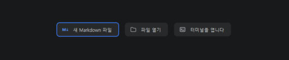
② backend 폴더 고르기 - C:\study\react-spring-mas-postgresql 로 들어가서 backend 를 한 번 클릭하고 폴더 선택. 저장소 맨 위 폴더(react-spring-mas-postgresql)가 아니라 그 안의 backend 를 연다. 그래야 IntelliJ 가 Gradle 멀티 프로젝트(서비스 3개)로 알아본다.
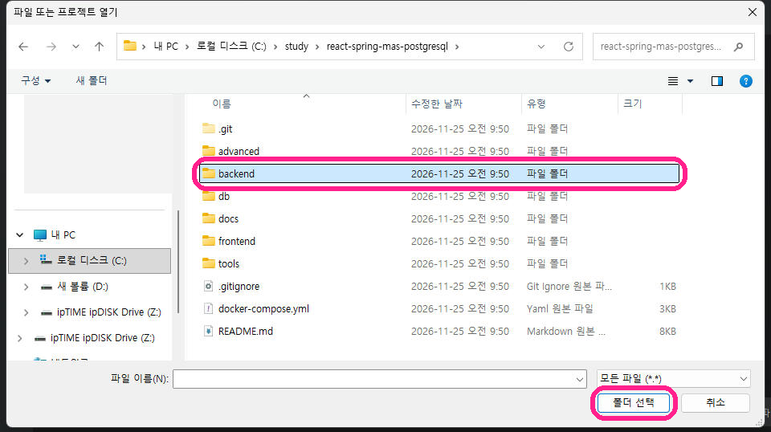
③ 프로젝트 신뢰 - "프로젝트 'backend'을(를) 신뢰하고 여시겠어요?" 가 나오면 프로젝트 신뢰(Trust Project). 내가 받은 강사 저장소이므로 믿어도 된다. 아래의 Microsoft Defender 제외 목록에 추가 칸은 체크를 해제한다. 켜 두면 관리자 권한을 묻고 백신 검사에서 이 폴더를 빼 버린다. (조금 빨라질 뿐, 실습에는 필요 없다)
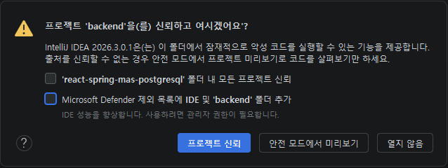
④ Gradle 가져오기 기다리기 - 오른쪽 아래에 "'backend' Gradle 프로젝트 가져오는 중" 막대가 돈다. 처음에는 라이브러리를 받느라 1~5분 걸린다. 막대가 사라질 때까지 아무것도 누르지 않고 기다린다. 끝나면 왼쪽 프로젝트 창에 서비스 폴더 3개가 굵은 글씨로 보인다.
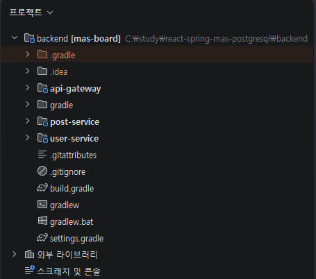
⑤ Gradle 창 확인 - 오른쪽 세로 막대의 코끼리 아이콘(Gradle)을 누른다. mas-board 아래에 api-gateway, post-service, user-service 가 보이면 성공이다. (mas-board 는 settings.gradle 의 rootProject.name)
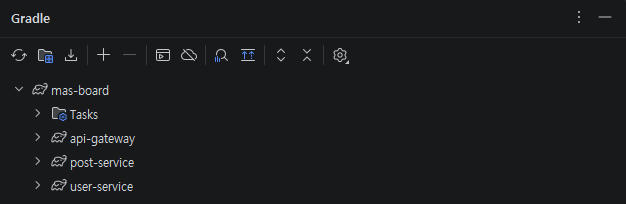
서비스 3개가 안 보이거나 빨간 오류가 있으면 Gradle 창 맨 왼쪽의 🔄(모든 Gradle 프로젝트 다시 로드)를 누른다. 그래도 안 되면 아래 ⑥ 의 JDK 를 확인한다.
⑥ JDK 21 확인 - 왼쪽 위 ☰ → 파일(File) → 프로젝트 구조(Project Structure) (단축키 Ctrl + Alt + Shift + S).
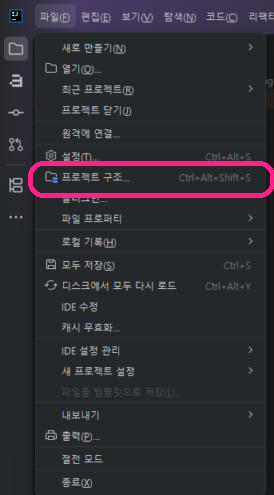
프로젝트 화면의 SDK 가 21 이면 그대로 취소한다.
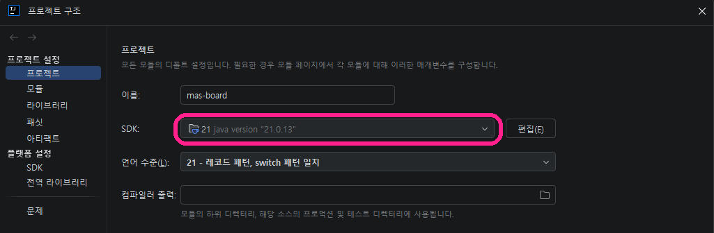
SDK 가 <SDK 없음> 이거나 17 같은 다른 버전이면, SDK 칸을 눌러 JDK 다운로드... → 버전 21, 공급업체 Eclipse Temurin → 다운로드. 다 받으면 확인.
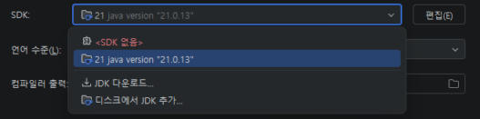
3-5. 서비스 실행하는 법
user-service 와 post-service 는 켜지면서 DB 에 접속하므로, 2장의 DB 를 먼저 켜 둔다. (지금 다 켜 볼 필요는 없다. 4장부터 하나씩 켠다)
| 서비스 | 실행할 파일 | 포트 |
|---|---|---|
| user-service | user-service/src/main/java/com/example/user/UserServiceApplication.java |
8081 |
| post-service | post-service/src/main/java/com/example/post/PostServiceApplication.java |
8082 |
| api-gateway | api-gateway/src/main/java/com/example/gateway/GatewayApplication.java |
8080 |
① 실행할 파일 열기 - 프로젝트 창에서 user-service → src → main → java → com.example.user 의 화살표(▸)를 차례로 눌러 펼치고, UserServiceApplication 을 두 번 클릭한다.
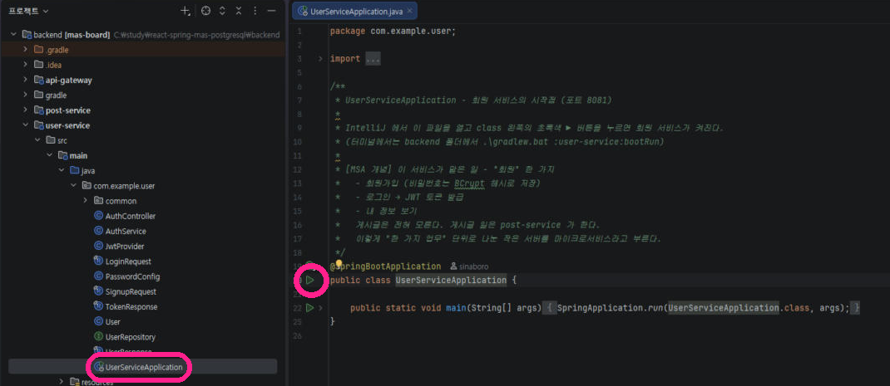
② ▶ 로 실행 - public class UserServiceApplication 줄 왼쪽의 초록색 ▶ 를 누르고 맨 위의 'UserServiceApplication.main()' 실행 을 고른다.
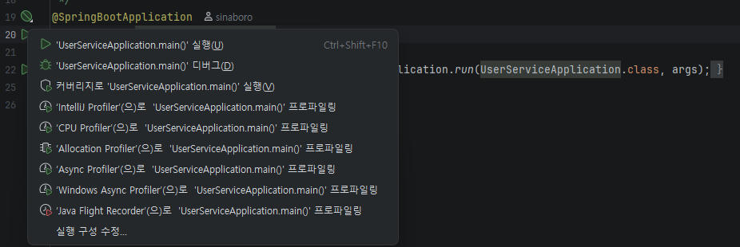
③ 켜졌는지 확인 - 아래쪽에 서비스(Services) 창이 열리고 콘솔에 로그가 올라간다. 마지막 즈음에 Started UserServiceApplication in ... seconds 가 보이면 켜진 것이다.
④ 나머지 두 개는 서비스 창에서 - 한 번 실행하면 IntelliJ 가 같은 프로젝트의 Spring Boot 프로그램을 모두 찾아 서비스 창의 Spring Boot 아래에 보여 준다. 목록에서 PostServiceApplication 을 고르고 위쪽 ▶(실행)를 누르고, GatewayApplication 도 같은 방법으로 켠다. 켜진 서비스 옆에는 포트(:8080/, :8081/, :8082/)가 붙는다.
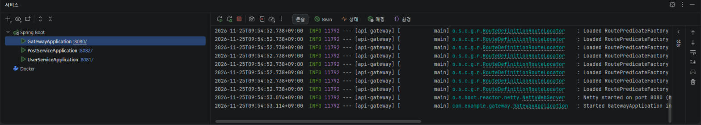
- 끄기: 서비스 창에서 고르고 위쪽 ■(빨간 네모). 다시 켜기: ▶ 또는 ↻.
- 서비스 창이 안 보이면 보기(View) → 도구 창(Tool Windows) → 서비스(Services) (
Alt + 8). - 오른쪽 위의 실행 구성 목록(초록 ▶ 옆)에서 서비스를 골라 켜도 된다.
목록에 서비스가 없거나 ▶ 가 회색이면 3-4 의 ④(Gradle 가져오기)가 아직 끝나지 않은 것이다. 오른쪽 아래 진행 막대가 사라질 때까지 기다린다.
[PS] IntelliJ 대신 터미널로 켜려면 - backend 폴더에서 터미널 3개를 열어 하나씩
cd C:\study\react-spring-mas-postgresql\backend # 세 터미널 모두 backend 폴더에서
# .\gradlew.bat : 저장소에 들어 있는 Gradle 실행기 (.\ = "지금 폴더의". Gradle 을 따로 설치하지 않아도 된다)
# :user-service:bootRun : user-service 프로젝트만 골라서(:이름:) Spring Boot 로 실행(bootRun)한다. 처음에는 라이브러리를 받느라 몇 분
# 서버는 끄기 전까지 계속 돌기 때문에 그 터미널은 프롬프트가 돌아오지 않는다 → 서비스마다 터미널을 따로 연다
.\gradlew.bat :user-service:bootRun # 터미널 1: 회원 서비스 (8081)
.\gradlew.bat :post-service:bootRun # 터미널 2: 게시글 서비스 (8082)
.\gradlew.bat :api-gateway:bootRun # 터미널 3: 게이트웨이 (8080) - 끌 때는 그 터미널에서 Ctrl+C
:서비스이름:bootRun 은 "그 서비스만 실행" 이라는 뜻이다. 서비스마다 따로 켜지고 따로 꺼진다. 이것이 MSA 다.
정리
backend는 Gradle 멀티 프로젝트다.settings.gradle의include하나가 서비스 하나다.- 공통 설정은
backend/build.gradle, 서비스별 라이브러리는 각 서비스의build.gradle에 둔다. - IntelliJ 에서
backend를 열고, 서비스마다...Application의 ▶ 로 따로 켠다.
확인 문제
post-service의build.gradle에 jjwt 가 없는 이유는?- 터미널에서 게시글 서비스만 켜는 명령은?
- 새 서비스
comment-service를 추가하려면settings.gradle에 무엇을 적어야 하는가?